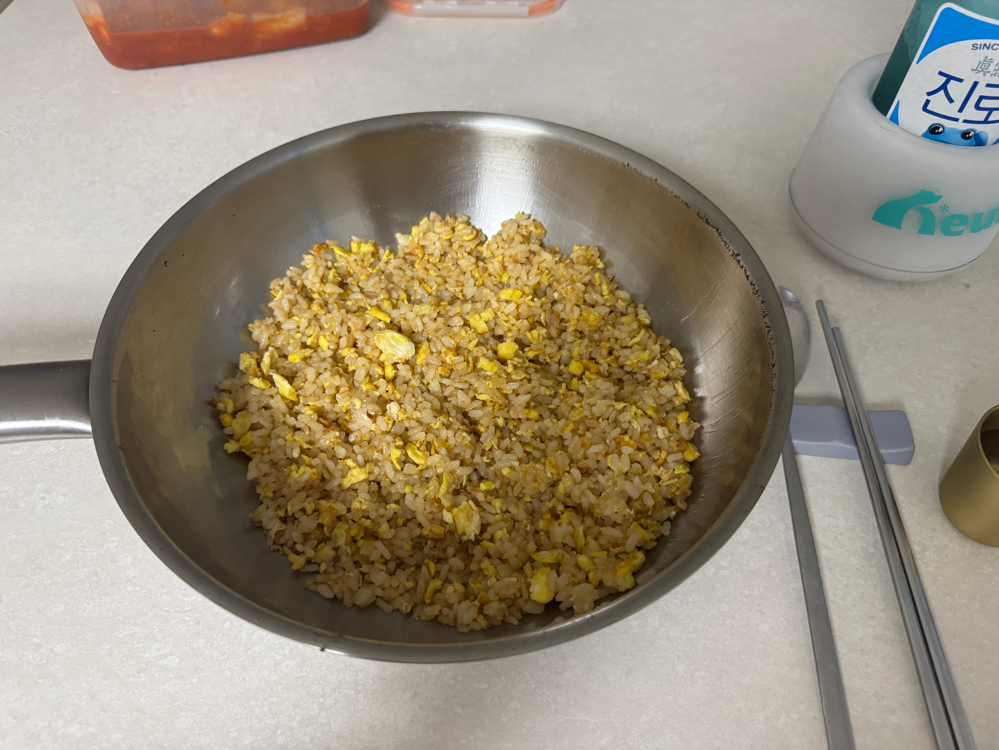

팬이든 웍이든 냄비든 모든 요리 기구를 스텐만 쓰는데
난 따로 길들이기도 안했는데 계속 쓰다보니까
어느순간 계란 후라이도 전혀 안달라 붙던뎅..

팬이든 웍이든 냄비든 모든 요리 기구를 스텐만 쓰는데
난 따로 길들이기도 안했는데 계속 쓰다보니까
어느순간 계란 후라이도 전혀 안달라 붙던뎅..
난 똑같이 해도 어떨 땐 붙고 어떨 땐 안 붙던데 이유를 몰겄다
예열 및 계란과 팬의 온도차 때문일 거라 생각해서 팬은 예열하고 계란은 예열하는 동안 살짝 뜨신 물에 좀 넣어뒀다가 계란 후라이 하는데, 처음 쓸 때보다는 낫긴 해도 아직 뜻대로 잘 되진 않는 듯
일정 수준 이상 온도가 올라가 있어야 함. 팬이 개뜨거우면 식재료들이 아 뜨거! 하면서 피하려고 하기 때문에 안 달라붙음
고슬고슬 맛있겠노
잘하네
나도 몇년 쓸때 불조절 잘하니까 쓸만하다 생각했는데 어쩌다 코팅팬 선물받아서 쓰니까 신세계더라 걍 바로 갈아탐
스뎅팬은 길들이는게 아닌데?? 매번 다시 코팅해줘야하는데
뎅뎅뎅뎅 후라이팬 뎅뎅뎅 안붙는 후라이팬 뎅뎅덴 안붙던뎅
우상단 까만건 기름인가
원래없는데 웍질하면서 계란이 묻으면서 타더라 그래서 오래하면 안됨
인덕션용 웍 뭐 없나 쓸만한거
그건 니가 진짜 못하는 사람을 못 봐서 그래
안닦고 기름덧방해서그런건가
바로 퐁퐁으로 설거지함
개인적으로 손으로 설거지 할때는 잘 되는데
식세기 돌리면 거의 안된다고 봐야함
그래서 식세기 돌리고 할때는 기름 빡세게 먹여야함
삼성인덕션 기준으로 28센티 WMF 스탠팬(하단 5중 1cm) 9단으로 1분 돌리고
식용유 두르고(뭐든 상관없음) 불 안들어간 다른 곳에 놓고 재료 준비 하면
거의 성공함
잘볶네